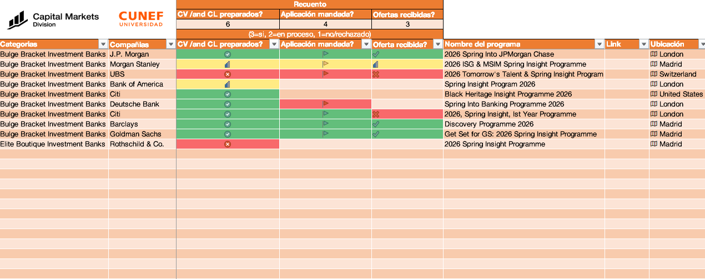

01 Encuentra prácticas y empleo
Termina con una lista de oportunidades que encajen contigo y un sistema para no perder sus plazos. Después prepararás los documentos de tu candidatura.
Define dónde quieres empezar
Escribe dos funciones que quieras explorar, dos ciudades y tu disponibilidad. Compara qué se hace en investment banking, gestión de activos, research o markets antes de decidir dónde presentar tu candidatura.
- Spring weeks e insight programmes: experiencias de introducción. El curso de acceso depende del programa y de la duración de tu grado.
- Summer internships: prácticas de verano; comprueba la ventana de graduación exigida.
- Off-cycle e industrial placements: prácticas fuera del verano o estancias más largas. Revisa si son compatibles con tus clases y con el convenio universitario.
- Graduate programmes y puestos junior: oportunidades para quienes terminan o han terminado el grado, según cada convocatoria.
Apunta año de graduación, idiomas, permiso de trabajo y posible patrocinio de visado. Estos requisitos cambian entre oficinas y programas.
Descarga las fichas sectoriales de CUNEF
En las fichas de Carreras Profesionales de CUNEF encontrarás los puestos y funciones, las empresas de cada sector y más información para orientar tu búsqueda. Descarga las áreas que quieras explorar.
Encuentra oportunidades y verifica la oferta
Empieza por la web de la empresa y los recursos de CUNEF. Amplía la búsqueda con los canales que cubran tu función, país y momento de carrera.
Canales de reclutamiento por categoría
Comprueba las condiciones de acceso y selecciona los recursos que encajen con tu búsqueda.
Portales generalistas · España y otros mercados
- LinkedIn Jobs
Ofertas y alertas por puesto, empresa y ubicación; útil también para localizar contactos profesionales.
- Indeed
Búsqueda amplia de empleo. Cambia de país cuando busques fuera de España y filtra prácticas o puestos junior.
- Glassdoor
Búsqueda de empleo e información sobre empresas, salarios y experiencias de candidatos. Trata las opiniones como referencias individuales.
- Welcome to the Jungle
Ofertas y perfiles de empresas. Comprueba la cobertura del país y las funciones financieras disponibles.
- CareerBuilder
Portal generalista para ampliar una búsqueda en Estados Unidos; revisa nivel de experiencia y requisitos de trabajo.
- InfoJobs
Empleo por sector, ubicación y experiencia.
Recursos de búsqueda de empleo y orientación; revisa el servicio disponible.
- Iberprax
Prácticas financieras en España, con búsqueda por ubicación, campo y empresa.
Puestos de informática y telecomunicaciones; filtra las funciones de datos o tecnología financiera que te interesen.
- Wellfound
Empleo en startups; selecciona la función, ubicación y nivel de experiencia.
Estudiantes y recién graduados · Reino Unido e internacional
- Trackr
Trackers de prácticas y primeros empleos por mercado y ciclo de incorporación. Ofrece información detallada de cada posición: fechas de apertura y cierre, requisitos y etapas del proceso de selección, cuando están disponibles. Elige el programa que corresponde a tu año de graduación y confirma los datos en la web de la empresa.
- Bright Network
Graduate programmes y prácticas en Reino Unido, con filtros de banca de inversión, gestión de activos y servicios financieros.
- TARGETjobs
Prácticas y programas de graduados en Reino Unido; selecciona banca, finanzas o consultoría.
- Gradcracker
Oportunidades para perfiles STEM en Reino Unido. Puede servir para puestos cuantitativos, tecnológicos o de análisis; comprueba las titulaciones admitidas.
Prácticas y primeros empleos; algunas funciones o contenidos pueden estar vinculados a una universidad.
- Handshake
Oportunidades para iniciar la carrera. Comprueba el país y las condiciones de acceso de tu cuenta o institución.
- Prosple
Prácticas y puestos de entrada; elige el mercado y la edición local que te interesen.
- Talentoteca
Programas de prácticas; comprueba requisitos y condiciones.
- StudentJob
Ofertas para estudiantes y primeros empleos.
Prácticas y oportunidades internacionales por ubicación y función.
- Primer Empleo
Prácticas y primeros puestos profesionales.
Portales por mercado · Europa, Asia y Oceanía
Selecciona el portal que cubra tu país y el tipo de oportunidad que buscas. El acceso a una oferta no implica que admita candidatos internacionales ni que ofrezca patrocinio de visado.
- Forged Finance
Seguimiento de oportunidades financieras por país y programa. Consulta sus planes y condiciones de acceso.
- SEEK Graduates · Antes GradConnection Australia
Prácticas y programas de graduados. El antiguo portal australiano de GradConnection redirige a esta sección.
 SEEK · Australia
SEEK · AustraliaPortal generalista; selecciona la ubicación y el nivel de entrada.
- JobsDB · Hong Kong
Ofertas locales; revisa idiomas y permiso de trabajo. El sitio permite cambiar a otros mercados de su red.
 JobStreet · Singapur
JobStreet · SingapurOfertas por sector y experiencia, con acceso a otros mercados del sudeste asiático.
Economía e investigación · Perfiles especializados
Son fuentes para puestos de economista e investigación, incluidos muchos de nivel avanzado o académico. Revisa si piden máster, doctorado o experiencia; no las uses como sustituto de los portales de prácticas de grado.
- Job Openings for Economists (JOE)
Mercado de empleo para economistas.
- Econ Job Market
Convocatorias y procesos de selección de economía e investigación.
Plataformas universitarias · Acceso según la institución
Plataforma de carreras universitarias. Accede por el enlace facilitado por tu institución si dispones de cuenta.
- Symplicity
Servicios de empleo universitario. La web del proveedor no sustituye al acceso institucional de alumnos.
El acceso depende de los acuerdos de cada institución. Tu punto de entrada en CUNEF es el portal de alumnos situado al principio de este paso.
Redes, programas profesionales y empleadores inclusivos
Complementan la búsqueda con orientación, contactos, eventos o convocatorias. Consulta las condiciones de cada programa y su alcance geográfico antes de inscribirte.
Programas de desarrollo y acceso profesional con criterios específicos de elegibilidad.
Acompañamiento y oportunidades a través de sus programas de movilidad social en Reino Unido.
Comunidad y experiencias de desarrollo profesional para estudiantes universitarios LGBTQ2IA+.
Asociación profesional con capítulos de estudiantes, programas, eventos y recursos de empleo.
- Forté
Programas de preparación y liderazgo en negocios para distintas etapas, desde universidad hasta MBA y carrera profesional.
Comunidad profesional, desarrollo y eventos de recruiting; revisa modalidades y condiciones de participación.
Bolsa de empleo de empleadores inclusivos LGBTQ+ en Reino Unido; filtra por sector y experiencia.
Prácticas internacionales · Europa, organizaciones y programas
La guía internacional de CUNEF propone combinar webs de empleadores, organismos, plataformas y contactos. Empieza por una fuente adecuada a tu país y perfil; revisa idioma, elegibilidad, posibles costes y condiciones directamente en la convocatoria.
Empleo en Europa e información sobre mercados, condiciones de vida y trabajo.
- Portal Europeo de la Juventud
Orientación y oportunidades de prácticas en Europa.
Información y orientación para acceder a oportunidades internacionales.
Asuntos europeos y puestos en Bruselas y otras ciudades.
- BCE
Prácticas en el Banco Central Europeo. Comprueba los requisitos académicos y las áreas del programa.
- OCDE
Prácticas en la OCDE para estudiantes de las titulaciones admitidas en cada convocatoria.
- Banco Mundial · WBG Pioneers
Programa WBG Pioneers y áreas relacionadas con economía, finanzas o datos. Revisa los requisitos de cada convocatoria.
- AIESEC
Experiencias internacionales. Selecciona prácticas profesionales y comprueba condiciones y posibles costes.
Prácticas internacionales con orientación técnica. Comprueba el encaje de tu titulación.
- Recruiting Erasmus
Red de empleo para talento con experiencia internacional.
Recursos de carrera por país. Comprueba el acceso institucional o las condiciones de suscripción.
Programa con condiciones propias de edad, residencia y región. Comprueba tu elegibilidad.
- V.I.E. / V.I.A. · Business France
Programas V.I.E. y V.I.A. con requisitos específicos de edad, nacionalidad y destino.
- English Jobs · Prácticas en Madrid
Una fuente para localizar equipos que trabajan en inglés. Confirma en la oferta qué nivel de español se exige.
- ErasmusIntern
Ofertas de prácticas internacionales. Revisa los requisitos con la organización y CUNEF.
Búsqueda de programas y prácticas internacionales. Revisa servicios incluidos y posibles costes.
- InternshipFinder
Información y búsqueda de prácticas. Comprueba las condiciones y la convocatoria oficial.
Encontrar una oportunidad en una plataforma no implica que CUNEF la haya validado ni garantiza reconocimiento académico. Revisa el proceso con la universidad antes de incorporarte.
Antes de aplicar: confirma que la convocatoria siga abierta, su ubicación, requisitos, documentación y plazo. Guarda la referencia y el enlace oficial; los agregadores pueden tener retrasos.
Organiza tus candidaturas y alertas
Utiliza el registro del club y añade una fila por vacante: categoría, compañía, programa, enlace, ubicación y proceso de selección. Actualiza el estado del CV y la carta de motivación, la candidatura enviada y la oferta recibida. Usa las notas para anotar requisitos, plazos y próxima acción.
Ejemplo ficticio: Firma A · Summer Analyst · Madrid · incorporación 2027 · requisitos comprobados · CV pendiente de adaptar · siguiente acción: revisar el CV el jueves.
Reserva dos revisiones semanales y prioriza las vacantes con plazo cercano. Si la selección es continua, prepara y envía una candidatura cuidada pronto: no supongas que la fecha límite garantiza plazas disponibles.
Configura alertas por puesto y ubicación en LinkedIn y, cuando exista la opción, en las webs de las empresas. Lleva las ofertas guardadas a tu registro para evitar duplicados.

